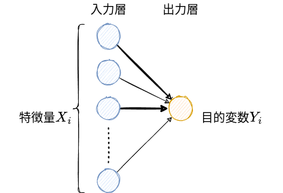

人工知能の機械学習
技術政策学（データ科学編）
はじめに
警告
日進月歩の分野なので、本章の内容はすぐに古いものになる（or既にそうであるかもしれない）点に注意。
ビッグデータは魅力的な資源（材料）だが、有効な利用法（調理法）があって初めて価値を持つ。
\(\leadsto\)近年のデータ科学における2つの変革
- 機械学習：データから一定のパターンを機械（パソコン）が学習し、予測をする。
- 因果推論：データから因果関係（因果効果）を学習する。
\(\leadsto\)いわゆる（最近において）人工知能と呼ばれるものは機械学習（予測）
- 現在は第3次人工知能ブームと言われている。
- クオリティが高いがゆえに、あたかも機械が人間のように思考しているように見えてしまう。
- 自然言語処理に関するタスクSuperGLUEでは人間を越えている。
生成 (generative) AI：ある情報から、別の情報を出力するモデル
- 大規模言語モデル (large language model: LLM)：大量のテキストを使い、巨大なモデルを学習した生成AI
- ChatGPT、Google Bard、Microsoft Bing AIなど
- GPT=Generative Pre-trained Trensformer
- まずは、OpenAIのPlaygroundで遊んでみよう。
- 画像生成の性能も向上、Vision and Languageの発展
生成モデルも実は予測の組み合わせである。
- DeepL\(\leadsto\)ある言語の文章から他の言語の文章を予測する。
- チャットbot、文書要約、コード生成\(\leadsto\)ある文章から返答、要約、次に来る文章を予測する。
- AmazonやNetflixの推薦\(\leadsto\)これまでの購入履歴やウォッチリストから次に購入する商品を予測する。
- 学習過程にテキストデータを含めることで、テキストから画像生成できる (vision and language) 。
代表的な機械学習の分類
- 教師あり学習：特徴量 (feature) から対象を予測する。
- 教師なし学習：多様な特徴量から重要なものを抽出する。
- 強化学習：フィードバックを通じて最適な方策 (policy) を発見する。
\(\leadsto\)これらの概要を理解し、生成AIが何をしているかを理解する。
1 教師あり学習
教師あり学習とは、機械に人間の判断のパターンを学習させ、模倣できるようにすること。
\(\leadsto\)言い換えれば、予測 (prediction) というタスクを実行できるように訓練する。
- 写真とその内容のペアのデータを機械に覚えさせる。
- 住宅の情報（間取り、最寄り駅までの距離……etc）と価格を機械に覚えさせる。
\(\leadsto\)ある情報を入力すると、それに対応する情報を出力する。
- 入力情報に対応する出力（正解）を人間が判断するアノテーションが重要になる。
1.1 回帰分析
シンプルで、広く使われている教師あり学習の手法として回帰分析 (regression analysis) がある。
- 例えば、北海道の中古マンション価格の教師あり学習を行ってみる。
\[ \textrm{価格} = 335.58 + 11.84 \times \textrm{広さ} \]
最小二乗法 (ordinary least squares: OLS) はデータとの誤差が最も小さくなる直線を計算する。
- 予測値を一次関数（直線）で予測する。
\[ i\textrm{の予測値} = \hat{y}_i = \underbrace{\hat{\alpha}}_{\textrm{切片 (intercept)}} + \underbrace{\hat{\beta}}_{\textrm{傾き (slope)}} x_i \]
- \(i\)は個体ごとに異なる値を取るということを意味している。
- 上手く予測できるような\(\hat{\alpha}, \hat{\beta}\)をデータから求める（学習する）。
- 真の値と予測値のズレ、誤差 (error) が小さい方がいいはず。
\[ i\textrm{の予測誤差} = i\textrm{の真の値} - i\textrm{の予測値} = y_i - \hat{y}_i \]
- ズレはプラスにもマイナスにもなるので、プラスの値しか取らない距離や面積に変換する。
- 通常は誤差を二乗して、面積にする。
\[ i\textrm{の予測誤差の二乗} = i\textrm{の真の値} - i\textrm{の予測値} = (y_i - \hat{y}_i)^2 \]
- 個々の誤差をデータ全体について計算し、合計する。
\[ i\textrm{の予測誤差の二乗の合計} = (y_1 - \hat{y}_1)^2 + (y_2 - \hat{y}_2)^2 + \cdots \]
\(\leadsto\)これを最小にする\(\hat{\alpha}, \hat{\beta}\)をデータから求める！（パソコンが計算してくれる）1
1 最適化（偏微分係数が0となる値を求める）によって明示的に解くことができる。
- \(\hat{\alpha}, \hat{\beta}\)は\(\hat{y}_i\)の中に入っていることに注意。
予測に使う情報（特徴量）は1つである必要はない。
\[ \textrm{価格} = 396.27 + 12.50 \times \textrm{広さ} -10.57 \times \textrm{距離} \]
- パターンを学習しているだけであり、機械がマンションについて理解しているわけではない。
予測対象がカテゴリーの場合はどうするのか？
- 機械学習の代表的なデータセットにタイタニック号の乗客データがある。
- このときの予測対象は乗客が生存したかどうかというカテゴリー
\(\leadsto\)ロジスティック関数（シグモイド関数）を使って変形すると、0から1の間に収まる。
1.2 決定木
回帰分析以外の代表的な教師あり学習の手法として決定木 (decision tree) がある。

\(\leadsto\)弱い決定木をたくさん集めたランダム・フォレスト（やその発展形2）がよく使われている。
2 XGBoostやLightGBMなど。
- 三人寄れば文殊の知恵？ 陪審定理？
1.3 深層学習
深層学習 (deep learning) は深層ニューラル・ネットワーク (deep neural network: DNN) とも呼ばれる。
\(\leadsto\)もともとは人間のニューロンをマシン上で再現すれば人工知能ができるかもという期待
- 閾値を超えると発火して信号を送信する。

\(\leadsto\)回帰分析をニューロンとして見て3、これをたくさん作る。
3 厳密に言えば、活性化関数を挟む。

なぜ深層学習はすごいのか？
- 隠れ層を増やせば増やすほど柔軟な予測ができる。
- パラメータの数（隠れ層の数に比例）\(\approx\)モデルのサイズ
- 例えば\[\hat{y}_i = \hat{\alpha} + \hat{\beta} x_i\]のパラメータの数は2
- 特徴量を人間が作らなくてよい。
- むしろ、重要な特徴量がなにかを学習する（表現学習）。
- 学習済みモデルを使える。
- タスクに応じて出力側を再学習（ファイン・チューニング）する。
- GPT=Generative Pre-trained Trensformer
- 様々な形式のデータ（テキスト、画像、音声……）を同じ枠組みで分析できる。
- vision and languageなどマルチモーダルなモデルの開発
\(\leadsto\)生成AI（LLM含む）は与えられた単語の列から、次に来そうな、もっともらしい単語を予測している（だけ）！

- 同じ入力に対して同じ回答をしないように、ある程度ランダムに予測をしている。
- GPTにおけるtemparatureはランダム度合いを指定している。
- 人工知能の獲得か？（例、中国語の部屋）
1.4 プロンプト・エンジニアリング
ChatGPTなどの最近のLLMがすごいのは、タスクも指示するだけでよいこと。
- 翻訳、要約、質疑応答などのタスクごとにモデルを作らなくて良い。
\(\leadsto\)入力する指示文（プロンプト）をどのようにするのかが重要。
- プロンプトの書き方を工夫することをプロンプト・エンジニアリングなどと呼ぶ。
- いくつかの具体例を提示すると、性能が良くなる、安定するfew shot learningという現象（？）
1.5 拡散モデル
拡散モデル：画像にノイズを追加していって、それを取り除くプロセスを学習


\(\leadsto\)テキストからの画像生成もテキスト→画像の予測を行っている。
2 教師なし学習
数値ではない文書データをどのようにデータ分析するのか？
- シンプルな方法はbag of words（単語の出現頻度を特徴量とする）アプローチ
\(\leadsto\)教師なし学習によってデータから特徴量を抽出する。
2.1 単語埋め込み
単語埋め込み (word embedding)：単語を低次元空間のベクトルに変換する
\(\leadsto\)単語のベクトル（位置）\(\approx\)意味？
- 単語の意味は周辺の単語によって決まるはず。
\(\leadsto\)周辺の単語をうまく予測できるベクトルを学習する。
- 画像も同様に埋め込むことで、テキスト→画像の予測が可能となる。
2.2 自己注意機構
近年の自然言語処理の飛躍的発展のキーはTransformer(Vaswani ほか 2017)の登場4
4 Transformerを提案したのはGoogleの研究者たち。
- BERT=Bidirectional Encoder Representations from Transformers
- GPT=Generative Pre-trained Trensformer
\(\leadsto\)特に自己注意機構 (self-attention mechanism) が重要（と言われている）
- ある単語を処理する際に、他のどの単語に注目すればよいのかを学習する。
- “Attention is all you need”(Vaswani ほか 2017)
- 離れた単語も踏まえた学習ができる。
- 学習速度が高速になる。5
5 並列化が可能になるため。
3 強化学習
一部のモデルでは強化学習を用いて、更に性能を向上させている。
- 例、GPT-3やそれ以上のベースと考えられているInstructGPT
強化学習では機械が最適なアクションを見つける。
- データからパターンを発見するわけではない。
- エージェントが状態→行動→環境→報酬・状態を繰り返し、報酬を大きくする行動を発見する。
3.1 AlphaGo
AlphaGoは強化学習で囲碁のアルゴリズムを学習し2016年に世界トップ棋士に勝利
- 初期設定として実際の棋譜データから学習したアルゴリズムを使用
- 2つのエージェント（機械）が対戦する中で大量にデータを生成し、学習

3.2 人間のフィードバック
InstructGPTでは人間のフィードバックからの強化学習 (Reinforcement Learning from Human Feedback: RLHF) を用いている。
- プロンプトと（人間の作った）回答のデータから教師あり学習
- 1で作ったモデルの回答結果と人間の採点結果のデータから教師あり学習
- 1と2のモデルを使ってプロンプト→回答→採点の強化学習
4 人工知能の社会的課題
あらゆる技術がそうであるように、新しい技術の登場、急速な普及は様々な問題を引き起こしうる。
- G7広島サミットで生成AIに関するルールを策定する広島AIプロセスの立ち上げに合意
4.1 人工知能の使い方
4.1.1 人工知能の悪用
AIを悪用\(\leadsto\)偽の情報を作り、拡散
\(\leadsto\)Deep Fakeはオンラインの画像や映像を加工\(\leadsto\)フェイクポルノなど深刻な被害の可能性

- ちなみに、スクリーンショットの捏造は人工知能を使わなくても簡単にできる。
どんな技術も悪用しようと思えばできる\(\leadsto\)（個人的に）重要なのは、悪用よりも誤用
4.1.2 人工知能の誤用
統計的差別 (statistical discrimination) ：個人の属性（属する集団）に基づく差別
- 学歴、性別、人種などで就職活動、賃貸契約、判決が異なる。
- 白人っぽい名前の履歴書と黒人っぽい名前の履歴書だと前者のほうが選考を通りやすい(Agan と Starr 2018)。
- 特に犯罪歴の記入要求を禁止 (ban the bpx) の後に顕著。
\(\leadsto\)機械学習はあくまで「人間を模倣」するので、人間に（無意識でも）差別があれば、機械はそれを学習する。
アメリカの一部の州では保釈や刑期を決定する際にCOMPASというシステムでリスク評価を行っていた。
- 黒人では「再犯する」と予測されたが「再犯しなかった」という間違いが多かった。
- 白人では「再犯しない」と予測されたが「再犯した」という間違いが多かった。

学習に用いるデータが偏っている\(\leadsto\)予測も偏る。

\(\leadsto\)公平性のある機械学習を行う必要がある。
敵対的攻撃 (adversarial attack) ：あえてAIを騙すような情報入力

ChatGPTなどで指摘されているのは幻覚 (hallucination) と呼ばれる現象
- 正しくない回答をあたかも正しいものと堂々と提示する。
意図せざる形での著作権侵害や個人情報流出も？
- 学習に使用されたデータがほとんどそのまま出力される可能性
\(\leadsto\)AIだからといって客観的であるわけでも、常識的であるわけでもない。
- 特に深層学習の中身はブラックボックスであり、説明可能性に欠けている。
- 回帰分析や決定木は分かりやすい。
4.1.3 人工知能と倫理
AI倫理、公平性のあるAIなどが必要
\(\leadsto\)AIが守るべき倫理、公平性とは？
自動運転車がトロッコ問題に遭遇したとき、どうすべきなのか？
モラル・マシンというアンケートに答えることで、どのような命を重視するのかが分かる。
- 「審査を始める」を押す。
- 直進する場合は左の絵を、曲がる場合は右の絵をクリックする。
- ドクロマークがついている人が死んでしまうとする。

倫理観は国ごとに異なる。

- お年寄りを助け、
- より多くの人を助けるわけではなく、
- 歩行者を助ける
傾向にあるらしい。
- 人工知能は人間に代わって倫理的判断を行うわけではない。
- 人工知能に期待する倫理も人々、国々の間で同じではない。
- 人工知能は誤作動も起こりうる。
\(\leadsto\)人工知能の責任はどこにあるのか？
4.1.4 人工知能と兵器
無人兵器とAI技術の発展は自律型致死兵器システム (Lethal Autonomous Weapons Systems: LAWS) の可能性を現実のものとしつつある。
- 人間の代わりに戦闘をさせることで人命の損失を減らせる／戦争やテロリズムが起こりやすくなる？
- 人道法の違反（文民の殺害など）を起こす？
- 誤作動だけでなく、現在のAI技術ではAIの判断を人間が理解できない可能性
\(\leadsto\)LAWS規制に関する議論の指針が2019年に定まったばかり。
4.2 人工知能と社会
4.2.1 人工知能と政治
AIと民主主義の関わりに着目されつつある？
- AIが人間に代わって政策を決定する。
- AIが個人の思考を学習して人間の代わりに政治（議論や投票……）をする。
- AIが議論や情報収集をアシストする。
科学技術を巡って展開される政治がある。
\(\leadsto\)なぜ、特定の技術がグローバル・スタンダードとして支配的になるのだろうか？


ネットワーク外部性：利用者が多いと、利用するメリットが増える。
\(\leadsto\)ある程度の規模の人々（クリティカル・マス）がその製品や技術を用いる\(\leadsto\)他の人も使うようになる。
規模の経済：生産量が増えると、平均的な費用が低下する。
\(\leadsto\)単独で市場のニーズを満たすことができる。
特にLLMの場合は初期投資が莫大\(\leadsto\)新規参入が更に困難
- 現在のLLMで重要なのは計算資源\(\times\)データ量\(\times\)モデルのサイズ\(\leadsto\)資金＆時間


{kind=link}
- GPT-3は1750億、GPT-4は5000億?以上
\(\leadsto\)先に行動する側に先行者利益 (first-mover advantage) がある。
一度、スタンダードになると（たとえ不便でも）それが利用され続ける。
- 経路依存性 (path dependency)：過去の偶然の事象が長い期間に渡って影響すること
日本は鉄道や原子力発電所などのインフラ輸出に力を入れている。
- ネットワーク効果によって、その国のスタンダードになりうる。
- 輸入国は特定の国への依存を避けるため、複数の国から導入したい。
先進国による5Gにおけるファーウェイの排除は安全保障だけが理由ではない。
- ネットワーク効果によってグローバル・スタンダードとなってしまう。
- 中国に依存せざるを得なくなる、いわゆる技術覇権への懸念
ネットワーク効果\(\leadsto\)みんながそのスタンダードを使うことが重要\(\leadsto\)非国家アクターにもスタンダードを決める力
- 私的権威 (private authority)：国家ではなく非国家アクター（企業や国際機関、テロリスト）が持つ権威(Hall と Biersteker 2002)
- 国際標準化機構 (International Organization for Standardization: ISO) が様々な規格を定める。
- ICANN (The Internet Corporation for Assigned Names and Numbers) がインターネットの運用を行っている。
EUはデータやAIに関する規制に積極的
\(\leadsto\)EUは域外適用を積極的に行う
- 域外適用：EU域内に存在しない企業がEU市民にサービス提供などを行う場合にEUを適用
- ブリュッセル効果：EU域外の企業がEU方に従わざるを得ず、EU法がグローバル・スタンダードになる現象
4.2.2 人工知能と環境
LLMの開発には大規模な計算が必要\(\leadsto\)莫大な電力消費と環境不可
4.2.3 人工知能と労働
AIの発展によって雇用は減るのか？
- ラッダイト運動：産業革命\(\leadsto\)繊維産業の自動化\(\leadsto\)熟練工の抗議
- 自動化によって新しい雇用の創出＆効率的な生産による生活水準の向上
- 1755-1802年の労働者の実質賃金は半減、生活環境の悪化
製造の自動化とは異なり、LLM（やその他の生成AI）によって代替される職業は？(Eloundou ほか 2023)
5 機械学習の実践
とりあえずデータに触れてみよう！
- Google Public Data Explorer
- Google Looker Studio
- Tableau Public
- Tableauが公開している公的データはこちら
機械学習を初めとするデータ分析は様々な教材・資料がオンラインに無料で公開されている。
人工知能（の基盤にある機械学習）の多くはPythonというプログラミング言語で実行
- 制約付きではあるがGoogle Colaboratoryでオンラインで実行できる。
- Python自体も無料なので、自分のPCにインストールして実行できる。
- 環境構築はちょっとめんどくさい
- jupyter notebookやvisual studio codeなどが人気のある統合開発環境 (integrated development environment: IDE)
パッケージをインストール・読み込む\(\leadsto\)様々な分析
- pandas：データの読み込み、処理
- matpoltlib, seaborn：グラフの作成
- sicikit-learn：（深層学習を除く）機械学習
- statsmodels：統計分析
深層学習のライブラリとしてTensorFlow、PyTorch、kerasなど
- TensorFlow CoreのチュートリアルやTensorFlow HubのチュートリアルではGoogle Colaboratoryで試すことができる。
- まずは学習済みモデルを利用
KaggleやSignate、Nishikaなどのデータ分析コンペ
- 学生向けのイベントもあり
- 就職活動でアピールできる（かも）
参考文献
Acemoglu, Daron, と Pascual Restrepo. 2020. 「Robots and jobs: Evidence from US labor markets」. Journal of political economy 128 (6): 2188–2244.
Agan, Amanda, と Sonja Starr. 2018. 「Ban the box, criminal records, and racial discrimination: A field experiment」. The Quarterly Journal of Economics 133 (1): 191–235.
Awad, Edmond, Sohan Dsouza, Richard Kim, Jonathan Schulz, Joseph Henrich, Azim Shariff, Jean-François Bonnefon, と Iyad Rahwan. 2018. 「The moral machine experiment」. Nature 563 (7729): 59–64.
Eloundou, Tyna, Sam Manning, Pamela Mishkin, と Daniel Rock. 2023. 「Gpts are gpts: An early look at the labor market impact potential of large language models」. arXiv preprint arXiv:2303.10130.
Hall, Rodney Bruce, と Thomas J Biersteker. 2002. The emergence of private authority in global governance. Vol. 85. Cambridge University Press.
Kaplan, Jared, Sam McCandlish, Tom Henighan, Tom B Brown, Benjamin Chess, Rewon Child, Scott Gray, Alec Radford, Jeffrey Wu, と Dario Amodei. 2020. 「Scaling laws for neural language models」. arXiv preprint arXiv:2001.08361.
Silver, David, Aja Huang, Chris J Maddison, Arthur Guez, Laurent Sifre, George Van Den Driessche, Julian Schrittwieser, ほか. 2016. 「Mastering the game of Go with deep neural networks and tree search」. nature 529 (7587): 484–89.
Vaswani, Ashish, Noam Shazeer, Niki Parmar, Jakob Uszkoreit, Llion Jones, Aidan N Gomez, Łukasz Kaiser, と Illia Polosukhin. 2017. 「Attention is all you need」. Advances in neural information processing systems 30.